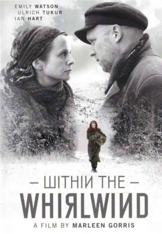

#5911 Mitten im Sturm
 
 IMDB-Wertung: 6.6 / 10
IMDB-Wertung: 6.6 / 10  Metascore: 0
Metascore: 0 
Gerade noch Günstling der kommunistischen Nomenklatura, fällt die renommierte Literaturprofessorin bei den Machthabern aufgrund absurder Anschuldigungen in Ungnade. 1937 wird sie verhaftet und zu zehn Jahren Zwangsarbeit verurteilt. Marleen Gorris ("Antonias Welt") hat das Schicksal der russischen Schriftstellerin bemerkenswert unsentimental inszeniert. Ihr Film, eine europäische Koproduktion, erinnert an die Willkür der stalinistischen Säuberungen und das Leiden der Verurteilten im Gulag. Dass Ginzburg durch das Rezitieren von Gedichten und durch die Zuneigung des wolgadeutschen Lagerarztes Anton Walter überlebte, klingt unglaublich - und ist doch wahr.
Jahr: 2009
Dauer: 110 Minuten
FSK:
Land: Deutschland Studio: NFP Marketing & DistributionTonspuren: DTS - ,
Untertitel:
Auflösung: 1080p (1920x1040) Größe: 9431 MB
Genre: Drama, Biographie
Regisseur: Marleen Gorris
Drehbuch: Paul Theroux
Soundtrack:
Darsteller:
 Emily Watson als Evgenia Ginzburg
Emily Watson als Evgenia Ginzburg Pam Ferris als Genia's mother
Pam Ferris als Genia's mother Ian Hart als Beylin
Ian Hart als Beylin Ben Miller als Krasny
Ben Miller als Krasny- Agata Buzek als Lena
 Monica Dolan als Pitkowskaya
Monica Dolan als Pitkowskaya Ulrich Tukur als Dr. Anton Walter
Ulrich Tukur als Dr. Anton Walter Benjamin Sadler als Pavel
Benjamin Sadler als Pavel- Zbigniew Zamachowski als Guard
- Martin Kaps als Local Comrade
- Lech Dyblik als Jegor
- Maria Seweryn als Zimmermann
 Krzysztof Globisz als Timoszkin
Krzysztof Globisz als Timoszkin- Agnieszka Mandat-Grabka als Woman in Train
- Maria Mamona als Tania
- Katarzyna Bargielowska als Wala
 Pierre Shrady als Pitkowski
Pierre Shrady als Pitkowski- Beata Fudalej als Olga
- Torsten Lennie Münchow als
 Adam Szyszkowski als
Adam Szyszkowski als - Krzysztof Ogloza als Man
- Boguslawa Schubert als Maria
- Pearce Quigley als Yelvov
 Jimmy Yuill als Siderov
Jimmy Yuill als Siderov- Heinz Lieven als Old Vlady
 Lena Stolze als Greta
Lena Stolze als Greta- Anna Smolowik als Prisoner
- Robert Mazurkiewicz als Man in Moscow
- Robert Zawadzki als Young Party Official
- Nick Dong-Sik als Confucius
- Piotr Grabowski als Driver
- Agnieszka Sienkiewicz als Wera
- Anna Kukawska als Prisoner
- Lukasz Garlicki als Piotr
- Zbigniew Konopka als Judge
- Joachim Schweizer als Rat face man
- Krzysztof Fus als Soldier
- Magdalena Górska als Magda
- Marta Dobecka als Prisoner
- Magdalena Gnatowska als Crimminalist
- Aleksander Trabczynski als Krywicki
- Dirk Moritz als
- Radoslaw Krzyzowski als Dikowitski
- Barbara Kurzaj als Crimminalist
- Ewelina Borówka als Karlica
- Grazyna Zielinska als Guard woman
- Piotr Rekawik als Guard
- Karolina Wojdala als Prisoner
- Remigiusz Jankowski als Guard in Train
- Balgan Batjargal als Mongol
Datei: X:\2009(G-M)\Mitten im Sturm (2009, FSK, 1920x1040).mkv seit 04.04.2017
Festplatte: HD 2009(G-Z)-2010(A-F)
 Es gibt insgesamt 82 Filme in der Gruppe '2009(G-M)'
Es gibt insgesamt 82 Filme in der Gruppe '2009(G-M)'